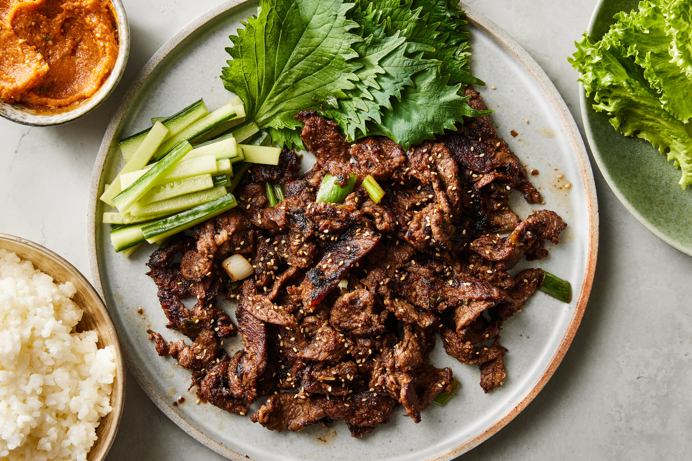
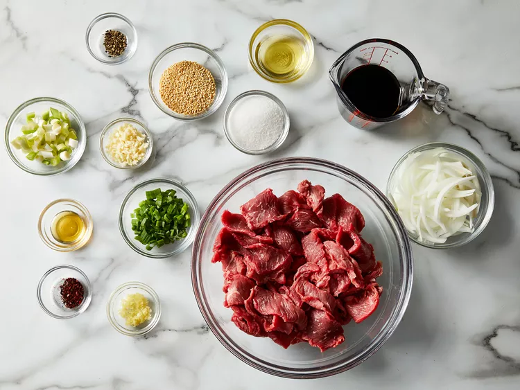
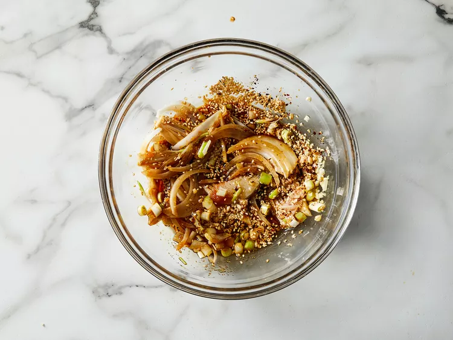
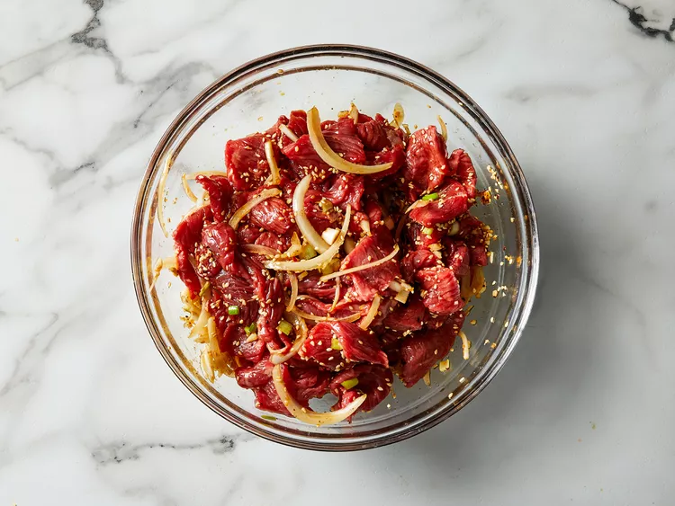
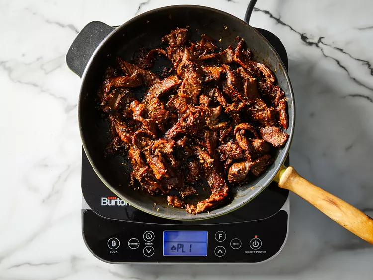

Bulgogi, or Korean barbecued beef, is made with marinated sliced beef.
Most recipes call for crushed pear to tenderize the meat. My
boyfriend's Korean mother says Coca-Cola can also be used for the same
purpose. This recipe uses very thinly-sliced sirloin steak, so
tenderization isn't necessary. It's delicious served with rice,
lettuce leaves, and chile paste or kimchi.

Prep Time:
10 mins
Cook Time:
5 mins
Additional Time:
1 hr
Total Time:
1 hr 15 mins
Servings:
6
Ingredients
⅓ cup soy sauce
2 green onions, chopped, dark green parts separated from white and
light green parts
¼ yellow onion, thinly sliced
3 tablespoons white sugar
3 cloves garlic, minced
2 tablespoons toasted sesame seeds
1 tablespoon sesame oil
¼ teaspoon Korean red pepper flakes
¼ teaspoon minced fresh ginger
⅛ teaspoon ground black pepper
1 ½ pounds beef sirloin steak, cut very thin using kitchen shears
1 teaspoon honey, or to taste
Directions
Step 1
Gather all ingredients.

PHOTO: DOTDASH MEREDITH FOOD STUDIOS
Step 2
Whisk soy sauce, white and light green parts of green onions, yellow
onion, sugar, garlic, sesame seeds, sesame oil, red pepper flakes,
ginger, and black pepper together in a large glass or ceramic bowl.

PHOTO: DOTDASH MEREDITH FOOD STUDIOS
Step 3
Add steak slices and toss to evenly coat. Cover the bowl with
plastic wrap and marinate in the refrigerator for 1 hour, or up to 1
day.

PHOTO: DOTDASH MEREDITH FOOD STUDIOS
Step 4
Heat a wok or large skillet over medium heat. Working in batches,
cook and stir steak and marinade together in the hot skillet, adding
honey to caramelize the steak, until steak is cooked through, about
5 minutes.

PHOTO: DOTDASH MEREDITH FOOD STUDIOS
Step 5
Garnish bulgogi with dark green parts of green onions.